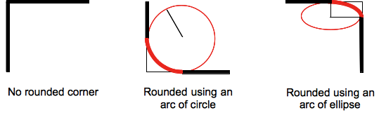
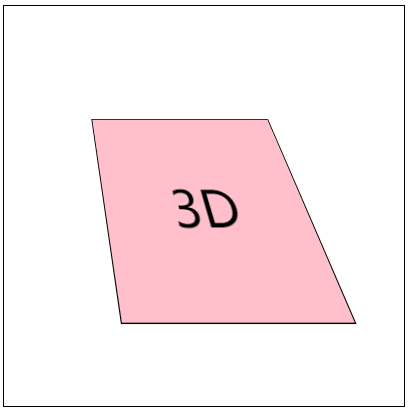
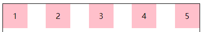
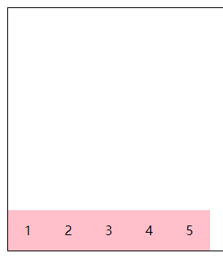

什么是css3
CSS3 是级联样式表 / 层叠样式表(Cascading Style Sheets)语言的最新进化，旨在扩展CSS2.1。
狭义上，我们可以认为css3是所有级别为3的css特性的集合
广义上，我们应该认为css3是css2.0后出现的所有css相关特性的集合
CSS Level 2 经历了 9 年的时间(从 2002 年 8 月到 2011 年 6 月)才达到 Recommendation(推荐) 状态。主要的原因是被一些 secondary features(次要特性) 拖了后腿。 为了加快那些已经确认为没有问题的特性的标准化速度， W3C 的 CSS Working Group(CSS 工作组) 作出了一项决定， 将 CSS 划分为许多小组件， 称之为 模块 。 这些模块彼此独立， 按照各自的进度来进行/列标准化。其中一些已经是 W3C Recommendation 状态， 也有一些还仅仅是 early Working Drafts(早期工作草案)。 当新需求被确认后， 新的模块也同样被添加进来。
再也没有css规范，只存在css模块及其模块级别
(https://www.w3.org/Style/CSS/current-work)
1、如果模块在 CSS 2.1 就有相关的内容，那么这些模块就从 level 3 开始。
2、如果是完全新的属性（比如 Flexbox），就直接从 level 1 开始。
3、一个模块的级别和它所在 CSS 的版本无关，即不管它是 CSS 2.1 的内容还是完全新的属性。
4、可能会看到类似 css4-backgrounds 这样的写法，其实代表的是 CSS Background & Borders Level 4，即4表示的是模块的等级。
CSS Working Group(CSS 工作组)
W3C（World Wide Web Consortium，万维网联盟）实际上并不制定标准。对于 W3C 旗下的各个工作组（Working Groups, WG）来说，W3C 更像是一个论坛，聚集各种兴趣团体并让他们为某个标准而努力。当然，W3C 并不只是作为整个论坛的观察者：它制定整个论坛的基本规则并观察标准制定的整个流程。
一份css标准要经历的一些流程
标准不是凭空捏造的，制定标准也不是闭门造车。CSS WG 所有的提交都是透明的，所有的交流都是对公众开放的（https://lists.w3.org/Archives/Public/www-style/）
标准确定一般有6个阶段，其中两个是过渡阶段：
（https://www.w3.org/2005/10/Process-20051014/tr#maturity-levels）
1.编辑草案 Editor’s Draft (ED)
这个是规范的开始阶段，一个CSS属性或者选择器被提出来，并在CSSWG内部研究。如果小组成员同意这个属性可以正式推出，它就能进入下一阶段
。对于处于这一阶段的规范，不附加任何必要条件，也不保证会被 WG 批准。此外，这也是修改版的第一个阶段：所有的修改内容首先要经过 ED，然后才能被发布。
2、工作草案 Working Draft (WD)
编辑草案后是工作草案，标准的设计阶段。小组反复处理来自 CSSWG 内部和来自小组外部的反馈，这个阶段有两个结果：一是可能会因为技术困难或者可能会引起其他问题而使新属性被完全拒绝；二是规范会通过这个阶段，并会作为第一次公开工作草案（ First Public Working Draft (FPWD)）发布，后面还会有数个工作草案，会处理来自 CSSWG 内部和小组外部更广泛社会的反馈。
3、最后通告工作草案 – Last Call Working Draft (LCWD)过渡阶段
这是第一个过渡阶段，当规范开始考虑从工作草案进入到下一个阶段时，将会对新属性的一些小改动的反馈设置一个截止日期，LCWD 即是日期截至后最后的一次公开草案处理。
4. 候选推荐标准 Candidate Recommendation (CR)
规范会在这个阶段通过完整的测试，测试人员来自 CSSWG 以及被选为实现这个规范的浏览器生产商(Chrome, Safari, Firefox, Opera, 等等)。为了继续进入下一阶段，CSSWG 会推出两个正确的实现规范。
5. 建议推荐标准– Proposed Recommendations (PR)过渡阶段
当到达这个阶段，W3C全球资源小组：W3C咨询委员会（W3C Advisory Committee），决定这个规范是否会继续进入下一个阶段。这个阶段一般很少有异议出现，所以也是一个过渡阶段而已。
6.推荐标准 Recommendation (REC)
如果规范到达这个阶段，说明规范已经考虑完备并可以让浏览器商实现，W3C 和 CSSWG 对这个规范的讨论处理不再活跃，只做一些必要的维护。
标准（规范）什么时候是稳定的
规范的稳定性基本和它所在的流程阶段没有关系。当规范特性已经开始传播开来，并因为向后兼容性不能改变时，它才是稳定的，这个阶段可能会在 ED 规范阶段或者 CR 阶段，这才是稳定性评判的正确方法，而不是 W3C 的标准发布流程。
浏览器前缀
有些 CSS 模块已经十分稳定并满足了 CSSWG 规定的三个推荐级别之一：Candidate Recommendation(候选推荐)， Proposed Recommendation(建议推荐) 或 Recommendation(推荐)。 这表明这些模块已经十分稳定，使用时也不必添加前缀， 但是一些特性还是有可能在 Candidate Recommendation 阶段被放弃。
总结
级联样式表(CSS)再也没有传统意义上的版本了;相反，它有级别。每个级别的CSS都建立在以前的、细化的定义和添加特性上。每个高级级别的特性集都是任何较低级别的超集，因此，符合更高级别CSS的用户代理也符合所有较低的级别。
- 样式表
- 规则
- 选择器 + 声明块
- 声明
- css属性+css属性值组成的键值对
CSS选择器
CSS3选择器规范地址： https://www.w3.org/TR/2011/REC-css3-selectors-20110929/
CSS3选择最新选择器规范: https://www.w3.org/TR/selectors
基本选择器
通配符选择器 * { margin: 0; padding: 0; border: none; }
元素选择器 body { background: #eee; }
类选择器 .list { list-style: square; }
ID选择器 #list { width: 500px; margin: 0 auto; }
后代选择器 .list li { margin-top: 10px; background: #abcdef; }
基本选择器扩展
-
子元素选择器
1
#wrap > .inner {color: pink;}
也可称为直接后代选择器,此类选择器只能匹配到直接后代，不能匹配到深层次的后代元素
-
相邻兄弟选择器
1
#wrap #first + .inner {color: #f00;}
它只会匹配紧跟着的兄弟元素
-
通用兄弟选择器
1
#wrap #first ~ div { border: 1px solid;}
兄弟选择符，位置无须紧邻，只须同层级，
A~B选择A元素之后所有同层级B元素。 -
选择器分组
1
h1,h2,h3{color: pink;}
此处的逗号我们称之为结合符
属性选择器
存在和值属性选择器
-
[attr]：该选择器选择包含 attr 属性的所有元素，不论 attr 的值为何。例如，
div[name]{ border: 1px solid;} -
[attr=val]：该选择器仅选择 attr 属性被赋值为 val 的所有元素。
-
[attr~=val]：表示带有以 attr 命名的属性的元素，并且该属性是一个以空格作为分隔的值列表，其中至少一个值为
val。
子串值属性选择器
-
[attr|=val] : 选择attr属性的值是val（包括val）或以val-开头的元素。
-
[attr^=val] : 选择attr属性的值以val开头（包括val）的元素。
-
[attr$=val] : 选择attr属性的值以val结尾（包括val）的元素。
-
[attr*=val] : 选择attr属性的值中包含字符串val的元素。
伪类与伪元素选择器
链接伪类
注意:link，:visited，:target是作用于链接元素的！
- :link 表示作为超链接，并指向一个未访问的地址的所有锚
- :visited 表示作为超链接，并指向一个已访问的地址的所有锚
- :target 代表一个特殊的元素，它的id是URI的片段标识符
:target 实例：利用 :target 实现点击某个标签，显示对应的样式

1 | <head> |
如上图所示，点击某个 锚点 ，则显示 id 为对应的锚记的样式，例如，点击第一个 a 标签，则此时的锚点为 #div1，而 :target 此时变为 #div1，所以 id 为 div1 的标签就有了 :target 的样式。
动态伪类
注意:hover，:active基本可以作用于所有的元素
- :hover 表示悬浮到元素上
- :active 表示匹配被用户激活的元素（点击按住时）
由于a标签的:link和:visited可以覆盖了所有a标签的状态，所以当:link，:visited，:hover，:active同时出现在a标身上时 :link和:visited不能放在最后！！！
隐私与:visited选择器
只有下列的属性才能被应用到已访问链接：
color、background-color、border-color
表单相关伪类
- :enabled 匹配可编辑的表单
- :disable 匹配被禁用的表单
- :checked 匹配被选中的表单
- :focus 匹配获焦的表单
自定义单选按钮

1 | <head> |
利用 label 标签将 input 与 span 绑定，这时点击 input 或者 span 都会选中该选项，接着利用绝对定位的特性，将 span 标签撑满整个 label ，然后给 label 设置 overflow: hidden ，隐藏 span 标签溢出边界的部分。
结构性伪类
index的值从1开始计数！！！！
index可以为变量n(只能是n)
index可以为even 、odd
#wrap ele:nth-child(index) 表示匹配#wrap中第index的子元素 这个子元素必须是ele
#wrap ele:nth-of-type(index) 表示匹配#wrap中第index的ele子元素
除此之外:nth-child和:nth-of-type有一个很重要的区别： nth-of-type以元素为中心
1 | <head> |
上面的渲染结果是除了最后一个 h2 以外，所有带有 inner 类属性的标签都会有 1px 的实线边界，而不是只有第一个 inner 类属性的标签有边界。因为 nth-of-type 以元素为中心，所以结果是匹配#wrap中所有带有 inner 子类元素里面，所有的第 1 个的非同类元素
:nth-child(index)系列
:first-child
:last-child
:nth-last-child(index)
:only-child (相对于:first-child:last-child 或者 :nth-child(1):nth-last-child(1))
:nth-of-type(index)系列
:first-of-type
:last-of-type
:nth-last-type(index)
:only-of-type (相对于:first-of-type:last-of-type 或者 :nth-of-type(1):nth-last-of-type(1))
:not
:empty(内容必须是空的，有空格都不行，有attr没关系)
伪元素
::after
::before
::firstLetter
::firstLine
::selection
css声明的优先级
选择器的特殊性
选择器的特殊性由选择器本身的组件确定，特殊性值表述为4个部分，如 0,0,0,0
一个选择器的具体特殊性如下确定：
- 对于选择器中给定的ID属性值，加 0,1,0,0
- 对于选择器中给定的各个类属性，属性选择，或伪类，加 0,0,1,0
- 对于选择器中的给定的各个元素和伪元素，加0,0,0,1
- 通配符选择器的特殊性为0,0,0,0
- 结合符对选择器特殊性没有一点贡献
- 内联声明的特殊性都是1,0,0,0
- 继承没有特殊性
特殊性 1,0,0,0 大于所有以0开头的特殊性(不进位)
选择器的特殊性最终都会授予给其对应的声明
如果多个规则与同一个元素匹配，而且有些声明互相冲突时，特殊性越大的越占优势
注意：id选择器和属性选择器
div[id=“test”]（0,0,1,1） 和 #test（0,1,0,0）
重要声明
有时某个声明比较重要，超过了所有其他声明，css2.1就称之为重要声明，并允许在这些声明的结束分号之前插入 !important 来标志。必须要准确的放置 !important 否则声明无效。 !important 总是要放在声明的最后，即分号的前面
标志为 !important的声明并没有特殊的特殊性值，不过要与非重要声明分开考虑。
实际上所有的重要声明会被浏览器分为一组，重要声明的冲突会在其内部解决，非重要声明也会被分为一组，非重要声明的冲突也会在其内部解决，如果一个重要声明与非重要声明冲突，胜出的总是重要声明
继承
继承没有特殊性，甚至连0特殊性都没有，0特殊性要比无特殊性来的强
来源
css样式的来源大致有三种：创作人员、读者、用户代理
权重：
- 读者的重要声明（IE浏览器有提供该功能的接口：打开IE浏览器 -》工具 -》Internet选项 -》辅助功能 -》用户样式表）
- 创作人员的重要声明
- 创作人员的正常声明
- 读者的正常声明
- 用户代理的声明
层叠
-
找出所有相关的规则，这些规则都包含一个选择器
-
计算声明的优先级
先按来源排序
在按选择器的特殊性排序
最终按顺序
自定义字体和字体图标
1 | @font-face |
1 | <style type="text/css"> |
1.制作一套 矢量图 （工具：Adobe illustrator[1]（简称：AI））
2.将矢量图与字符进行绑定（工具：FontLab[2]）
3.使用工具或者站点生成一套字体（字体兼容处理网站：https://www.fontsquirrel.com/tools/webfont-generator）
4.最终使用
从上面第 2 步生成的字体文件（例如，*.ttf 为后缀的文件）上传到第 3 步的网站中，然后该网站会生成一个压缩包，接着下载并解压，目录如下
1 | webfontkit-日期 |
stylesheet.css 的内容如下：
1 | /*! Generated by Font Squirrel (https://www.fontsquirrel.com) on January 22, 2018 */ |
其实有用的是以 .woff 、 .woff2 、 .css 为后缀的文件，其他文件可以删除，可以加入 index.html 来进行演示，目录如下
1 | ┌── index.html |
index.html
1 |
|
或者使用下面的方法获取自定义字体图标（淘宝网 就是采用此方法）
icomoon字体图标: https://icomoon.io/#home（阿里巴巴的图标库：https://www.iconfont.cn/）
在 icomoon 网站上选中或者上传对应的 SVG，然后生成字体（Generate Font），接着下载压缩包并解压，目录如下
1 | ┌── fonts |
目录中只有 fonts 文件和 style.css 是有用的，其他是起到说明和演示作用
打开 demo.html 以查看字体中所有字形及其代码/连字的列表。
要在桌面程序中使用生成的字体，可以安装TTF字体。 为了复制与每个图标关联的字符，请参考 demo.html 中每个字形右下角的文本框。 此文本框中的字符可能不可见，但仍可以复制。 有关更多信息，请参见本指南：https://icomoon.io/#docs/local-fonts。如果将生成的字体是要用在自己的项目中的，则不需要 demo-files 目录下的任何文件。
您也可以不用通过 demol.html 来查看图标，而是在 https://icomoon.io/ 网站上使用 Import Icons 按钮（或通过 Main Menu → Manage Projects）将 selection.json 导入IcoMoon应用，以检索图标选择。
自定义实例：
1 | ┌── fonts |
index.html
1 |
|
注意：
矢量图形是计算机图形学中用点、直线或者多边形等基于数学方程的几何图元表示图像。矢量图形与使用像素表示图像的位图不同。 —— 参照于 矢量图形
通俗来说，矢量图存储的是一幅图的结构数据，例如各个关键点的相对位置和比例等数据，当图形放大或缩小的时候，矢量图图形是根据结构数据重新绘制的，因此几乎不失真。
新的 UI 方案
文本新增样式
opacity
opacity属性指定了一个元素的透明度
默认值：1.0 不可继承
1 | #test { opacity: 0.1 } |
新增颜色模式rgba
1 | #test { color: rgba(0, 0, 0, .8) } |
文字阴影
text-shadow 用来为文字添加阴影，而且可以添加多层，阴影值之间用逗号隔开。（多个阴影时，第一个阴影在最上边）
1 | 默认值：none。不可继承 |
值
<color>
可选。可以在偏移量之前或之后指定。如果没有指定颜色，则使用UA（用户代理）选择的颜色。
<offset-x> <offset-y>
必选。这些长度值指定阴影相对文字的偏移量。
<offset-x> 指定水平偏移量，若是负值则阴影位于文字左边。
<offset-y> 指定垂直偏移量，若是负值则阴影位于文字上面。
如果两者均为0，则阴影位于文字正后方(如果设置了<blur-radius> 则会产生模糊效果)。
<blur-radius>
可选。这是 <length> 值。如果没有指定，则默认为0。
值越大，模糊半径越大，阴影也就越大越淡
文字阴影
1 | <head> |
浮雕文字
1 | <head> |
模糊文字

1 | <head> |
文字描边
只有webkit内核才支持：-webkit-text-stroke（准确的来说不能算是css3的东西）
1 | -webkit-text-stroke: <length> <color>; |
1 | #test { -webkit-text-stroke: 5px pink } |
文字排版
direction: 控制文字的方向。一定要配合 unicode-bidi: bidi-override; 来使用
取值
ltr ：默认属性。可设置文本和其他元素的默认方向是从左到右。
rtl ：可设置文本和其他元素的默认方向是从右到左。
1 | div { |
text-overflow : 确定如何向用户发出未显示的溢出内容信号。
它可以被剪切，
显示一个省略号（’…’）
1 | <head> |
盒模型新增样式
盒模型阴影
box-shadow
以逗号分割列表来描述一个或多个阴影效果，可以用到几乎任何元素上。 如果元素同时设置了 border-radius，阴影也会有圆角效果。多个阴影时和多个 text shadows 规则相同(第一个阴影在最上面)。
默认值: none 不可继承
值：
inset
默认阴影在边框外。
使用inset后，阴影在边框内。
<offset-x> <offset-y>
这是头两个 <length> 值，用来设置阴影偏移量。
<offset-x> 设置水平偏移量，如果是负值则阴影位于元素左边。
<offset-y> 设置垂直偏移量，如果是负值则阴影位于元素上面。
如果两者都是0，那么阴影位于元素后面。
这时如果设置了<blur-radius> 或<spread-radius> 则有模糊效果。
<blur-radius>
这是第三个 <length> 值。值越大，模糊面积越大，阴影就越大越淡。
不能为负值。默认为0，此时阴影边缘锐利。
<spread-radius>
这是第四个 <length> 值。取正值时，阴影扩大；取负值时，阴影.收缩。默认为0，此时阴影与元素同样大。
<color>
阴影颜色，如果没有指定，则由浏览器决定
盒模型阴影

1 | <head> |
倒影
-webkit-box-reflect 设置元素的倒影（准确的来说不能算是css3的东西）
默认值:none 不可继承
值：（必须是123的顺序）
倒影的方向
第一个值，above, below, right, left
倒影的距离
第二个值，长度单位
渐变
第三个值

1 | <head> |
resize
resize 是 CSS 属性允许你控制一个元素的可调整大小性。（一定要配合overflow：auto使用）
默认值：none 不可继承
值：
none
元素不能被用户缩放。
both
允许用户在水平和垂直方向上调整元素的大小。
horizontal
允许用户在水平方向上调整元素的大小。
vertical
允许用户在垂直方向上调整元素的大小。

1 | <head> |
box-sizing
box-sizing 属性用于更改用于计算元素宽度和高度的默认的 CSS 盒子模型。可以使用此属性来模拟不正确支持CSS盒子模型规范的浏览器的行/列为。
默认值：content-box 不可继承
值
content-box
默认值，标准盒子模型。 width 与 height 只包括内容的宽和高， 不包括边框（border），内边距（padding），外边距（margin）。注意: 内边距, 边框 & 外边距 都在这个盒子的外部。 比如. 如果 .box {width: 350px}; 而且 {border: 10px solid black;} 那么在浏览器中的渲染的实际宽度将是370px;
尺寸计算公式：
width = 内容的宽度，
height = 内容的高度。
宽度和高度都不包含内容的边框（border）和内边距（padding）。
border-box
width 和 height 属性包括内容，内边距和边框，但不包括外边距。这是当文档处于 Quirks模式 时Internet Explorer使用的盒模型。
这里的维度计算为：
width = border + padding + 内容的 width，
height = border + padding + 内容的 height。
新增UI样式
圆角
传统的圆角生成方案，必须使用多张图片作为背景图案。CSS3圆角的出现，使得我们再也不必浪费时间去制作这些图片了，而且还有其他多个优点：
- 减少维护的工作量。图片文件的生成、更新、编写网页代码，这些工作都不再需要了。
* 提高网页性能。由于不必再发出多余的HTTP请求，网页的载入速度将变快。
* 增加视觉可靠性。某些情况下（网络拥堵、服务器出错、网速过慢等等），背景图片会下载失败，导致视觉效果不佳。CSS3就不会发生这种情况
border-radius
用来设置边框圆角。当使用一个半径时确定一个圆形；当使用两个半径时确定一个椭圆，这个(椭)圆与边框的交集形成圆角效果。

默认值 : 0 不可继承
值：
固定的px值定义圆形半径或椭圆的半长轴，半短轴。不能用负值
使用百分数定义圆形半径或椭圆的半长轴，半短轴。水平半轴相对于盒模型的宽度；垂直半轴相对于盒模型的高度。不能用负值
这是一个简写属性，用来设置
border-top-left-radius,
border-top-right-radius,
border-bottom-right-radius ，
border-bottom-left-radius
半径的第一个语法取值可取1~4个值:
border-radius: radius
border-radius: top-left-and-bottom-right top-right-and-bottom-left
border-radius: top-left top-right-and-bottom-left bottom-right
border-radius: top-left top-right bottom-right bottom-left
半径的第二个语法取值也可取1~4个值
border-radius: (first radius values) / radius
border-radius: (first radius values) / top-left-and-bottom-right top-right-and-bottom-left
border-radius: (first radius values) / top-left top-right-and-bottom-left bottom-right
border-radius: (first radius values) / top-left top-right bottom-right bottom-left
注意
百分比值
在旧版本的 Chrome 和 Safari 中不支持。(fixed in Sepember 2010)
在 11.50 版本以前的 Opera 中实现有问题。
Gecko 2.0 (Firefox 4) 版本前实现不标准：水平半轴和垂直半轴都相对于盒子模型的宽度。
在旧版本的 iOS (iOS 5 之前) 和 Android 中 (WebKit 532 之前) 不支持。
椭圆
1 | <head> |
风车

1 | <head> |
对话框

1 | <head> |
边框图片
border-image CSS属性允许在元素的边框上绘制图像。。这使得绘制复杂的外观组件更加简单，使用 border-image 时，其将会替换掉 border-style 属性所设置的边框样式
默认值： 不可继承
border-image-source: none
border-image-slice: 100%
border-image-width: 1
border-image-outset: none
border-image-repeat: stretch
border-image-source
border-image-source 属性定义使用一张图片来代替边框样式；如果只为none，则仍然使用border-style 定义的样式。
默认值：none 不可继承
border-image-slice
border-image-slice 属性会通过规范将 border-image-source 的图片明确的分割为9个区域：四个角，四边以及中心区域。
并可指定偏移量
默认值：100% 不可继承
值得百分比参照于image本身！

border-image-repeat
border-image-repeat 定义图片如何填充边框。或为单个值，设置所有的边框；或为两个值，分别设置水平与垂直的边框。
默认值：stretch 不可继承
值：
stretch （拉伸）
repeat，round（平铺）
border-image-width
border-image-width 定义图像边框宽度。
默认值：1 不可继承
border-image-outset
border-image-outset属性定义边框图像可超出边框盒的大小
默认值：0 不可继承
正值： 可超出边框盒的大小
边框图片
1 | <head> |
背景
css2
background-color
background-color 会设置元素的背景色
默认值： transparent 不可继承
background-image
background-image属性用于为一个元素设置一个或多个背景图像，图像在绘制时，以z轴方向堆叠的方式进行。先指定的图像会在之后指定的图像上面进行绘制。
注意：background-color会在image之下进行绘制，边框和内容会在image之上进行绘制
默认值：none 不可继承
background-repeat
background-repeat CSS 属性定义背景图像的重复方式。背景图像可以沿着水平轴，垂直轴，两个轴重复，或者根本不重复。
默认值：repeat 不可继承
值：
repeat-x = repeat no-repeat
repeat-y = no-repeat repeat
repeat = repeat repeat
no-repeat = no-repeat no-repeat
第一个值代表水平方向。
第二个值代表垂直方向。
background-position
指定背景位置的初始位置
默认值：0% 0% 不可继承
值：
百分比：参照尺寸为背景图片定位区域的大小减去背景图片的大小
第一个值：元素在水平方向的位移
第二个值：元素在垂直方向的位移
关键字：
top left and left top
Same as ‘0% 0%’.
top, top center, and center top
Same as ‘50% 0%’.
right top and top right
Same as ‘100% 0%’.
left, left center, and center left
Same as ‘0% 50%’.
center and center center
Same as ‘50% 50%’.
right, right center, and center right
Same as ‘100% 50%’.
bottom left and left bottom
Same as ‘0% 100%’.
bottom, bottom center, and center bottom
Same as ‘50% 100%’.
bottom right and right bottom
Same as ‘100% 100%’.
如果只有一个值被指定，则这个值就会默认设置背景图片位置中的水平方向，与此同时垂直方向的默认值被设置成50%。
background-attachment
background-attachment 决定背景是在视口中固定的还是随包含它的区块滚动的。
默认值：scroll 不可继承
值：
fixed
此关键字表示背景相对于视口固定。即使一个元素拥有滚动机制，背景也不会随着元素的内容滚动 。
scroll
此关键字表示背景相对于元素本身固定， 而不是随着它的内容滚动
文字的背景图

1 | <head> |
css3
background-origin
设置背景的渲染的起始位置
border-box
padding-box
content-box
background-clip
设置背景裁剪位置
background-size
background-size 设置背景图片大小
默认值：auto auto 不可继承
值：
百分比： 指定背景图片相对背景区（background positioning area）的百分比。背景区由background-origin设置，默认为盒模型的内容区与内边距
auto： 以背景图片的比例缩放背景图片。
注意：
单值时，这个值指定图片的宽度，图片的高度隐式的为auto
两个值: 第一个值指定图片的宽度，第二个值指定图片的高度
background
background 是CSS简写属性，用来集中设置各种背景属性。background 可以用来设置一个或多个属性:background-color, background-image, background-position, background-repeat, background-size, background-attachment。
默认值： 不可继承
background-image: none
background-position: 0% 0%
background-size: auto auto
background-repeat: repeat
background-origin: padding-box
background-clip: border-box
background-attachment: scroll
background-color: transparent
顺序无关
渐变
CSS 渐变 是在 CSS3 Image Module 中新增加的图片类型；使用 CSS 渐变可以在两种颜色间制造出平滑的渐变效果. 用它代替图片，可以加快页面的载入时间、减小带宽占用。同时，因为渐变是由浏览器直接生成的，它在页面缩放时的效果比图片更好，因此你可以更加灵活、便捷的调整页面布局。
浏览器支持两种类型的渐变：线性渐变 (linear)，通过 linear-gradient 函数定义，以及 径向渐变 (radial)，通过 radial-gradient 函数定义.
线性渐变
为了创建一个线性渐变，你需要设置一个起始点和一个方向（指定为一个角度）。你还要定义终止色。终止色就是你想让浏览器去平滑的过渡过去，并且你必须指定至少两种，当然也会可以指定更多的颜色去创建更复杂的渐变效果。
-默认从上到下发生渐变
linear-gradient(red,blue);
-改变渐变方向：（top bottom left right）
linear-gradient(to 结束的方向,red,blue);
-使用角度
linear-gradient(角度,red,blue);

-颜色节点的分布（第一个不写为0%，最后一个不写为100%）
linear-gradient(red 长度或者百分比,blue 长度或者百分比);
-重复渐变
repeating-linear-gradient(60deg,red 0,blue 30%);
颜色线性渐变
1 | background-image:linear-gradient(90deg,red 10%,yellow 20%,green 30%); |
纯颜色无渐变
1 | background-image:linear-gradient(90deg,rgba(0,0,0,1) 100px,rgba(0,0,0,1) 300px); |
重复渐变

1 | background-image:repeating-linear-gradient(90deg,rgba(0,0,0,0),rgba(0,0,0,1) 100px); |
发廊灯

1 | <head> |
光斑动画

1 | <html> |
径向渐变
-默认均匀分布
radial-gradient(red,blue);
-不均匀分布
radial-gradient(red 50%,blue 70%);
-改变渐变的形状
radial-gradient(circle ,red,blue)
circle
ellipse（默认为椭圆）
-渐变形状的大小
radial-gradient(closest-corner circle ,red,blue)
closest-side 最近边
farthest-side 最远边
closest-corner 最近角
farthest-corner 最远角 （默认值）
-改变圆心
radial-gradient(closest-corner circle at 10px 10px,red,blue);
过渡
transition
众所周知，css效率极高，其变化的过程往往都是在一瞬间完成，速度极快。
CSS transition 提供了一种在更改CSS属性时控制动画速度的方法。 其可以让属性变化成为一个持续一段时间的过程，而不是立即生效的。比如，将一个元素的颜色从白色改为黑色，通常这个改变是立即生效的，使用 CSS transitions 后该元素的颜色将逐渐从白色变为黑色，按照一定的曲线速率变化。这个过程可以自定义
简写属性transition:
transition是一个简写属性，用于 transition-property,transition-duration,transition-timing-function, 和transition-delay。
CSS 过渡 由简写属性 transition 定义是最好的方式，可以避免属性值列表长度不一，节省调试时间
默认值：
transition-delay: 0s
transition-duration: 0s
transition-property: all
transition-timing-function: ease
注意
在transition属性中，各个值的书写顺序是很重要的：第一个可以解析为时间的值会被赋值给transition-duration，第二个可以解析为时间的值会被赋值给transition-delay
推荐抒写顺序
过渡时间 过渡样式 过渡形式 延迟时间 [，过渡时间 过渡样式 过渡形式 延迟时间]
兼容性
transition 可以不用厂商前缀，不过鉴于标准刚刚稳定，对于基于 Webkit的浏览器仍然需要厂商前缀。如果想兼容旧版本的浏览器那么也需要厂商前缀（例如Firefox 15 及之前版本, Opera 12 及之前版本)
transition-property
指定应用过渡属性的名称
默认值为 all，表示所有可被动画的属性都表现出过渡动画(https://developer.mozilla.org/zh-CN/docs/Web/CSS/CSS_animated_properties)
可以指定多个 property
属性值：
none
没有过渡动画。
all
所有可被动画的属性都表现出过渡动画。
IDENT
属性名称 （可以指定多个）
transition-duration
属性以秒或毫秒为单位指定过渡动画所需的时间。
默认值为 0s ，表示不出现过渡动画。
可以指定多个时长，每个时长会被应用到由 transition-property 指定的对应属性上。如果指定的时长个数小于属性个数，那么时长列表会重复。如果时长列表更长，那么该列表会被裁减。两种情况下，属性列表都保持不变。
属性值
以毫秒或秒为单位的数值
<time> 类型。表示过渡属性从旧的值转变到新的值所需要的时间。如果时长是 0s ，表示不会呈现过渡动画，属性会瞬间完成转变。不接受负值。一定要加单位(不能写0 一定要写0s 1s,0s,1s)！
transition-timing-function
CSS属性受到 transition的影响，会产生不断变化的中间值，而 CSS transition-timing-function 属性用来描述这个中间值是怎样计算的。实质上，通过这个函数会建立一条加速度曲线，因此在整个transition变化过程中，变化速度可以不断改变
默认值：ease
你可以规定多个timing function,通过使用 transition-property属性，可以根据主列表(transition property的列表)给每个CSS属性应用相应的timing function.如果timing function的个数比主列表中数量少，缺少的值被设置为初始值（ease） 。如果timing function比主列表要多，timing function函数列表会被截断至合适的大小。这两种情况下声明的CSS属性都是有效的。
属性值：
1、ease：（加速然后减速）默认值，ease函数等同于贝塞尔曲线(0.25, 0.1, 0.25, 1.0).
2、linear：（匀速），linear 函数等同于贝塞尔曲线(0.0, 0.0, 1.0, 1.0).
3、ease-in：(加速)，ease-in 函数等同于贝塞尔曲线(0.42, 0, 1.0, 1.0).
4、ease-out：（减速），ease-out 函数等同于贝塞尔曲线(0, 0, 0.58, 1.0).
5、ease-in-out：（加速然后减速），ease-in-out 函数等同于贝塞尔曲线(0.42, 0, 0.58, 1.0)
6、cubic-bezier： 贝塞尔曲线
7、step-start：等同于steps(1,start)
step-end：等同于steps(1,end)
steps(
第一个参数：必须为正整数，指定函数的步数
第二个参数：指定每一步的值发生变化的时间点（默认值end）
transition-delay
transition-delay属性规定了在过渡效果开始作用之前需要等待的时间。
默认值：0s
你可以指定多个延迟时间，每个延迟将会分别作用于你所指定的相符合的css属性。如果指定的时长个数小于属性个数，那么时长列表会重复。如果时长列表更长，那么该列表会被裁减。两种情况下，属性列表都保持不变
属性值
值以秒（s）或毫秒（ms）为单位，表明动画过渡效果将在何时开始。取值为正时会延迟一段时间来响应过渡效果；取值为负时会导致过渡立即开始。
当属性值的列表长度不一致时
1 | transition-property: background,width,height; |
超出的情况下是会被全部截掉的
不够的时候，关于时间的会重复列表，transition-timing-function的时候使用的是默认值ease
检测过渡是否完成
当过渡完成时触发一个事件，在符合标准的浏览器下，这个事件是 transitionend, 在 WebKit 下是 webkitTransitionEnd
（每一个拥有过渡的属性在其完成过渡时都会触发一次transitionend事件）
在transition完成前设置 display: none，事件同样不会被触发
总结
过渡的一些坑
a.过渡只关系元素的初始状态和结束状态，没有方法可以获取元素在过渡中每一帧的状态
b.元素在初次渲染还没有结束的时候，是没有办法触发过渡的
c.在绝大部分变换样式的切换时，变换组合的个数或位置不一样时，是没有办法触发过渡的transition-property
指定过渡动画的属性（并不是所有的属性都可以动画）
transition-duration
指定过渡动画的时间（0也要带单位）
transition-timing-function
指定过渡动画的形式（贝塞尔）
transition-delay
指定过渡动画的延迟
transition
第一个可以被解析成时间的值会赋给transition-duration
transtionend事件（DOM2）
在每个属性完成过渡时都会触发这个事件
当属性值的列表长度不一致时
跟时间有关的重复列表
transition-timing-function使用默认值
2D变形（transform）
transform 属性允许你修改CSS视觉格式模型的坐标空间
transform 属性 , 只对 block 级元素生效！
旋转（rotate）
transform:rotate(angle);
正值:顺时针旋转 rotate(360deg)
负值:逆时针旋转 rotate(-360deg)
只能设单值。正数表示顺时针旋转，负数表示逆时针旋转
平移（translate）
X方向平移:transform: translateX(tx)
Y方向平移:transform: translateY(ty)
二维平移：transform: translate(tx[, ty])； 如果ty没有指定，它的值默认为0。
可设单值，也可设双值。
正数表示XY轴正向位移，负数为反向位移。设单值表示只X轴位移，Y轴坐标不变，
例如transform: translate(100px);等价于transform: translate(100px,0);
倾斜（skew）
transform:skewX(45deg);
X方向倾斜:transform: skewX(angle)
skewX(45deg):参数值以deg为单位 代表与y轴之间的角度
Y方向倾斜:transform: skewY(angle)
skewY(45deg):参数值以deg为单位 代表与x轴之间的角度
二维倾斜:transform: skew(ax[, ay]); 如果ay未提供，在Y轴上没有倾斜
skew(45deg,15deg):参数值以deg为单位 第一个参数代表与y轴之间的角度，第二个参数代表与x轴之间 的角度
单值时表示只X轴扭曲，Y轴不变，如transform: skew(30deg);等价于 transform: skew(30deg, 0);
考虑到可读性，不推荐用单值，应该用transform: skewX(30deg);。skewY表示只Y轴扭曲，X轴不变
正值:拉正斜杠方向的两个角
负值:拉反斜杠方向的两个角
缩放（scale）
transform:scale(2);
X方向缩放:transform: scaleX(sx);
Y方向缩放:transform: scaleY(sy);
二维缩放 :transform: scale(sx[, sy]); (如果sy 未指定，默认认为和sx的值相同)
要缩小请设0.01～0.99之间的值，要放大请设超过1的值。
例如缩小一倍可以transform: scale(.5);
放大一倍可以transform: scale(2);
如果只想X轴缩放，可以用scaleX(.5)相当于scale(.5, 1)。
同理只想Y轴缩放，可以用scaleY(.5)相当于scale(1, .5)
正值:缩放的程度
负值:不推荐使用（有旋转效果）
单值时表示只X轴,Y轴上缩放粒度一样，如transform: scale(2);等价于transform: scale(2,2);
基点的变换
transform-origin
transform-origin CSS属性让你更改一个元素变形的基点。
1 | transform-origin: 100% 100%; |
矩阵（matrix）
在 2D变换 中，矩阵变换函数 matrix() 接受 6个值，语法形式如下：
transform: matrix(a, b, c, d, e, f);
这相当于，对元素应用一个如下的变换矩阵：
点(Xi,Yi,1)进行变换后的新坐标
即根据变换矩阵进行变换之后点 (xi,yi) 的坐标是(axi+cyi+e,bxi+dyi+f)
旋转
对某一元素应用旋转变换 rotate(θ)，相当于对其应用如下变换矩阵：
即等价于矩阵变换函数 matrix(cosθ, sinθ, -sinθ, cosθ, 0, 0)。
平移
对某一元素应用旋转变换 translate(X, Y)，相当于对其应用如下变换矩阵：
即等价于使用矩阵变换函数 matrix(1, 0, 0, 1, X, Y)
倾斜
对某一元素应用倾斜变换 skew(α, β)，相当于对其应用如下变换矩阵：
即等价于使用矩阵变换函数 matrix(1, tanβ, tanα,1, 0, 0)。
缩放
对某一元素应用缩放变换 scale(scaleX, scaleY)，相当于对其应用如下变换矩阵：
即等价于使用矩阵变换函数 matrix(scaleX, 0, 0, scaleY, 0, 0)
变换组合

1 |
|
由上面效果可知，变换组合是从右往左计算的，比如 #test1 矩形的基点是在自身的中心，所以 #test1 右下角的坐标是（50, 50），然后是变换组合的计算规则是从右往左计算的，所以 transform: translateX(100px) scale(.5); 的计算过程如下：
先将 scale(.5) 和（50，50）转为对应的变换矩阵（变换规则：缩放 和 矩阵），再进行相乘：
得到新坐标（25, 25）后，再和 translateX(100px) 进行计算：
所以 #test1 右下角的经过变换组合后最终的坐标是（125, 25）
其实对于人来说，可以不用管从右往左还是从左往右计算，例如以下的思考过程更适合我们：
transform: translateX(100px) scale(.5);
- 原坐标是（50,50），先向 X 轴正方平移 100px得到（150,50）
- 然后再将矩形的大小缩小原来的0.5，所以是（125,25）
transform: scale(.5) translateX(100px);
- 原坐标是（50,50），先将坐标轴缩小为原来的 0.5，变成了（25,25）
- 然后向 X 轴正方平移 50px（因为坐标轴变为原来的 0.5，所以100px 变成了 50px） 得到（75,50）
案例
扇形导航

1 |
|
按钮高亮

1 |
|
时钟

1 |
|
总结
rotate
旋转
translate
平移
skew
斜切
scale
缩放
变换组合!
顺序是从右往左的，变换的底层其实就是矩阵的运算
基点的变换
transform-origin
3D变形
在浏览器中，X轴是从左到右，Y轴是从上到下，Z轴是从里到外

3D旋转
CSS3中的3D旋转主要包括四个功能函数
rotateX(angle)、
rotateY(angle)、
rotateZ(angle)、等价于rotate(angle)
rotate3d(x,y,z,angle)
x, y, z分别接受一个数值(number),用来计算矢量方向(direction vector)，矢量方向是三维空间中的一条线, 从坐标系原点到x, y, z值确定的那个点，元素围绕这条线旋转angle指定的值
效果

向坐标（1,1,1）方向旋转
1 | #wrap{ perspective: 200px; } |
1 |
|
3D平移
transform: translateZ(length)是3D Transformaton特有的，其他两个2D中就有
translateZ 它不能是百分比 值; 那样的移动是没有意义的。
transform: translate3d(translateX,translateY,translateZ);
translateZ 它不能是百分比 值; 那样的移动是没有意义的

向X轴和Y轴的负方向平移 #wrap 的50%的宽度，向Z轴负方向平移100px
1 | #wrap{ perspective: 100px; } |
3D缩放
transform: scaleZ(number)
transform: scale3d(scaleX,scaleY,scaleZ);
如果只设置scaleZ(number)，你会发现元素并没有被扩大或压缩，scaleZ(number)需要和translateZ(length)配合使用，number乘以length得到的值，是元素沿Z轴移动的距离，从而使得感觉被扩大或压缩

1 | #wrap { |
景深（perspective）
景深:
景深（英语：Depth of field, DOF）景深是指相机对焦点前后相对清晰的成像范围。在光学中，尤其是录影或是摄影，是一个描述在空间中，可以清楚成像的距离范围。虽然透镜只能够将光聚 到某一固定的距离，远离此点则会逐渐模糊，但是在某一段特定的距离内，影像模糊的程度是肉眼无法察觉的，这段距离称之为景深。当焦点设在超焦距处时，景深 会从超焦距的一半延伸到无限远，对一个固定的光圈值来说，这是最大的景深
简单的理解，景深就是我们的肉眼距离显示器的距离，景深越大，元素离我们越远，效果就不好，在我们CSS3中，perspective用于激活一个3D空间，属性值就是景深大小（默认none无景深）
应用景深的元素称为“舞台元素”，舞台元素的所有后代元素都会受影响，（如果后代元素中也添加了perspective属性，效果会叠加而不是覆盖）
transform: perspective(depth);
depth的默认值是none，可以设置为一个长度值，这个长度是沿着Z轴距离坐标原点的距离。1000px被认为是个正常值
若使用perspective()函数，那么他必须被放置在transform属性的首位，如果放在其他函数之后，则会被忽略
perspective: depth;
同perspective()函数一样，depth的默认值是none，可以设置为一个长度值，这个长度是沿着Z轴距离坐标原点的距离。他们唯一的区别是，perspective属性是被用于元素的后代元素，而不是元素本身；就是说，为某个元素设置perspective属性后，是对这个元素的子元素起作用，而不是这个元素本身。
perspective-origin
同perspective属性，也是设置在父元素上，对后代元素起作用。 这个属性来设置你在X, Y轴坐标确定的那个点来看这个元素，Z轴是被perspective属性设置的
灭点
指的是立体图形各条边的延伸线所产生的相交点。透视点的消失点

1 |
|
景深叠加
1 |
|
去掉景深叠加
1 | <!-- <div style="perspective: 300px;"> --> |
transform-style
这个属性指定了子元素如何在空间中展示，只有两个属性值：flat（默认）和preserve-3d
flat 表示所有子元素在2D平面呈现，
preserve-3d 表示所有子元素在3D平面呈现，
如果被扁平化，则子元素不会独立的存在于三维空间。
因为该属性不会被（自动）继承，所以必须为元素所有非叶后代节点设置该属性
1 |
|
立方体（第一版）

1 |
|
backface-visibility
backface-visibility属性用来设置，是否显示元素的背面，默认是显示的。
backface-visibility: keyword;
keyword有两个值，hidden和visible，默认值是visible。
立方体（backface-visibility）
1 |
|
案例
立方体（第二版）
1 |
|
三棱柱

1 |
|
多棱柱

1 |
|
动画（animation）
人类具有视觉暂留的特性，人的眼睛在看到一幅画或一个物体后，在0.34秒内不会消失。
动画原理：
通过把人物的表情、动作、变化等分解后画成许多动作瞬间的画幅，利用视觉暂留的原理，
在一幅画还没有消失前，播放下一幅画。就会给人造成一种流畅的视觉变化效果。
css3动画
使元素从一种样式逐渐变化为另一种样式的效果
animation属性是一个简写属性形式: （可以用来描述可动画的属性）
可动画属性的列表：
https://developer.mozilla.org/en-US/docs/Web/CSS/CSS_animated_properties
简写属性animation
animation：
animation-name
animation-duration
animation-timing-function
animation-delay
animation-iteration-count
animation-direction
animation-fill-mode
animation-play-state
在每个动画定义中，顺序很重要：可以被解析为 <time> 的第一个值被分配给animation-duration, 第二个分配给 animation-delay。
关键帧（@keyframes）
语法：
1 | @keyframes animiationName{ |
animiationName:必写项，定义动画的名称
keyframes-selector：必写项，动画持续时间的百分比
from：0%
to：100%
css-style：css声明

1 |
|
animation-name
animation-name属性指定应用的一系列动画，每个名称代表一个由@keyframes定义的动画序列
值:
none
特殊关键字，表示无关键帧。
keyframename
标识动画的字符串
animation-duration
animation-duration属性指定一个动画周期的时长。
默认值为0s，表示无动画。
值
一个动画周期的时长，单位为秒(s)或者毫秒(ms)，无单位值无效。
注意：负值无效，浏览器会忽略该声明，但是一些早起的带前缀的声明会将负值当作0s
animation-timing-function
animation-timing-function属性定义CSS动画在每一动画周期中执行的节奏。
对于关键帧动画来说，timing function作用于一个关键帧周期而非整个动画周期，即从关键帧开始，到关键帧结束。
动画的默认效果：由慢变快再变慢
linear:线性过渡，等同于贝塞尔曲线（0,0,1,1）
ease:平滑过渡，等同于贝塞尔曲线（0.25,0.1,0.25,1.0）
ease-in:由慢到快，等同于贝塞尔曲线（0.42,0,1,1）
ease-out:由快到慢，等同于贝塞尔曲线（0,0,0.58,1）
ease-in-out:由慢到快再到慢，等同于贝塞尔曲线（0.42,0,0.58,1）
cubic-bezier(1,1,2,3)
steps(n,[start|end])
传入一到两个参数，第一个参数意思是把动画分成 n 等分，然后动画就会平均地运行。
第二个参数 start 表示从动画的开头开始运行，相反，end 就表示从动画的结尾开始运行，
默认值为 end
animation-delay
定义动画开始前等待的时间,以秒或毫秒计(属于动画外的范畴)
值:
<time>
从动画样式应用到元素上到元素开始执行动画的时间差。该值可用单位为秒(s)和毫秒(m s)。如果未设置单位，定义无效
animation-iteration-count
定义了动画执行的次数（属于动画内的范畴）
值
infinite
无限循环播放动画.
<number>
动画播放的次数 不可为负值.
animation-fill-mode
属于动画外的范畴，定义动画在动画外的状态
-
animation-fill-mode: none
-
animation-fill-mode: backwards
-
animation-fill-mode: forwards
-
animation-fill-mode: both

1 |
|
animation-play-state
定义了动画执行的运行和暂停
值
running
当前动画正在运行。
paused
当前动画以被停止。
1 |
|
animation-direction
定义了动画执行的方向
值
normal
每个循环内动画向前循环，换言之，每个动画循环结束，动画重置到起点重新开始， 这是默认属性。
alternate
动画交替反向运行，反向运行时，动画按步后退，同时，带时间功能的函数也反向， 比如，ease-in 在反向时成为ease-out。计数取决于开始时是奇数迭代还是偶数迭 代
reverse
反向运行动画，每周期结束动画由尾到头运行。
alternate-reverse
反向交替， 反向开始交替
1 |
|
step函数
1 |
|
案例
兔斯基

1 |
|
开机动画2d

1 |
|
开机动画3d

1 |
|
布局扩展（flex）
flex布局
CSS3 弹性盒子(Flexible Box 或 Flexbox)，是一种用于在页面上布置元素的布局模式，使得当页面布局必须适应不同的屏幕尺寸和不同的显示设备时，元素可预测地运行/列。对于许多应用程序，弹性盒子模型提供了对块模型的改进，因为它不使用浮动，flex容器的边缘也不会与其内容的边缘折叠。
弹性盒模型，分老版与新版
老版本的我们通常称之为box
新版本的我们通常称之为flex
容器与项目
主轴 与 侧轴
由flex-direction/-webkit-box-orient确定
有了新版本后，为什么还需要老版本？（新版本比老版本要强大的很多）
很多移动端浏览器内核版本都超低
老版本（-webkit-box）
容器设置display为 -webkit-box
容器
容器的布局方向
-webkit-box-orient: horizontal;
-webkit-box-orient: vertical;
（注意:项目永远是在主轴上排列的）
-webkit-box-orient属性本质上确定了主轴是哪一根
horizontal:x轴
vertical:y轴
容器的排列方向
-webkit-box-direction: normal;
-webkit-box-direction: reverse;
（注意:项目永远是沿着主轴的正方向排列的）
-webkit-box-direction属性本质上改变了主轴的方向
富裕空间的管理
富裕空间的管理（主轴）（-webkit-box-pack）
-
start 富裕空间在右边（x）或者下边（y）
1
-webkit-box-pack: start;
1
2-webkit-box-direction: reverse;
-webkit-box-pack: start;由上面两图可知，老版本的富裕空间的控制不受主轴的正反方向所影响
1
2-webkit-box-orient: vertical;
-webkit-box-pack: start;1
2
3-webkit-box-orient: vertical;
-webkit-box-direction: reverse;
-webkit-box-pack: start; -
end 富裕空间在左边（x）或者 上边（y）
1
-webkit-box-pack: end;
-
center 富裕空间在两边
1
-webkit-box-pack: center;
-
justify 富裕空间在项目之间
1 | -webkit-box-pack: justify; |

富裕空间的管理（侧轴）（-webkit-box-align）
-
start 富裕空间在右边（x）或者下边（y）
1
-webkit-box-align: start;
1
2-webkit-box-orient: vertical;
-webkit-box-align: start; -
end 富裕空间在左边（x）或者上边（y）
-
center 富裕空间在两边
-webkit-box-align 不会给项目区分配空间，只是确定富裕空间的位置
项目（item）
弹性空间的管理
弹性空间的管理：将富裕空间按比例分配到各个项目上
-webkit-box-flex: 1;
默认值:0 不可继承
1 | #wrap > .item{ |
如上图可知，-webkit-box-flex: 1 将富裕空间平均分给每个项目（item），而第一个项目（item）被分到的富裕空间是其他项目的4倍
新版本（flex）
容器
容器的布局方向
flex-direction: row;
flex-direction: column;
容器的排列方向
flex-direction:row-reverse;
flex-direction:column-reverse;
容器的布局与排列方向：
在老版的弹性盒模型中我们需要容器的两个属性来控制其布局与排列的方向
-webkit-box-orient：两个属性值
-webkit-box-direction：两个属性值
在新版的弹性盒模型中我们只需要一个：
flex-direction：四个属性值！！！新版的弹性盒模型在容器的布局与排列的方向上自带富裕空间的管理
富裕空间管理
更强大的富裕空间的管理（主轴）（justify-content）
-
flex-start富裕空间在主轴的正方向
1
justify-content: flex-start;
1
2flex-direction: row-reverse;
justify-content: flex-start;由上面两张图可知，新版本的富裕空间的控制是与主轴的正方向有关，这一点与老版本的flex布局有很大的不同
-
flex-end 富裕空间在主轴的反方向
1
justify-content: flex-end;
1
2flex-direction: row-reverse;
justify-content: flex-end;
-
center 富裕空间在主轴的两边
-
space-between 富裕空间在项目之间
-
space-around(box 没有的) 富裕空间在项目两边
更强大的富裕空间的管理（侧轴）(align-items)
-
flex-start 富裕空间在侧轴的正方向
-
flex-end 富裕空间在侧轴的反方向

-
center 富裕空间在侧轴的两边

-
baseline(box 没有的) 按基线对齐
1
2
3
4
5
6
7
8
9#wrap {
align-items: baseline;
}
.item {
line-height: 50px;
}
.item:nth-child(4) {
line-height: 80px;
} -
stretch(box 没有的) 等高布局
-
项目
弹性空间管理
flex-grow: 1
1 | #wrap > .item{ |
新版flex布局详解
http://www.ruanyifeng.com/blog/2015/07/flex-grammar.html?utm_source=tuicool
弹性容器属性
flex-direction
flex-wrap
flex-flow
justify-content
align-items
align-content
弹性元素属性
order
align-self
flex-grow
flex-shrink
flex-basis
容器
flex-wrap
flex-wrap 属性控制了容器为单行/列还是多行/列。并且定义了侧轴的方向，新行/列将沿侧轴方向堆砌。
默认值：nowrap 不可继承
值：nowrap | wrap | wrap-reverse
当项目(item)总长度大于容器的长度，设置 flex-wrap: wrap 或者 flex-wrap: wrap-reverse 时，项目(item)才回换行
1 | #wrap { |
1 | #wrap { |
1 | #wrap { |
1 | #wrap { |
align-content
align-content 属性定义弹性容器的侧轴方向上有额外空间时，如何排布每一行/列。当弹性容器只有一行/列时无作用
默认值：stretch 不可继承
值：
flex-start
所有行/列从侧轴起点开始填充。第一行/列的侧轴起点边和容器的侧轴起点边对齐。
接下来的每一行/列紧跟前一行/列。
flex-end
所有弹性元素从侧轴末尾开始填充。最后一个弹性元素的侧轴终点和容器的侧轴终点对齐。
同时所有后续元素与前一个对齐。
center
所有行/列朝向容器的中心填充。每行/列互相紧挨，相对于容器居中对齐。
容器的侧轴起点边和第一行/列的距离相等于容器的侧轴终点边和最后一行/列的距离。
space-between
所有行/列在容器中平均分布。相邻两行/列间距相等。
容器的侧轴起点边和终点边分别与第一行/列和最后一行/列的边对齐。
space-around
所有行/列在容器中平均分布，相邻两行/列间距相等。
容器的侧轴起点边和终点边分别与第一行/列和最后一行/列的距离是相邻两行/列间距的一半。
stretch
拉伸所有行/列来填满剩余空间。剩余空间平均的分配给每一行/列
1 | #wrap { |
1 | #wrap { |
1 | #wrap { |
1 | #wrap { |
1 | #wrap { |
1 | #wrap { |
1 | #wrap { |
1 | #wrap { |
1 | #wrap { |
1 | #wrap { |
flex-flow
flex-flow 属性是设置“flex-direction”和“flex-wrap”的简写
默认值：row nowrap 不可继承
控制主轴和侧轴的位置以及方向
项目
order
order 属性规定了弹性容器中的可伸缩项目在布局时的顺序。元素按照 order 属性的值的增序进行布局。拥有相同 order 属性值的元素按照它们在源代码中出现的顺序进行布局
order越大越后
默认值：0 不可继承
align-self
align-self 会对齐当前 flex 行中的 flex 元素，并覆盖 align-items 的值. 如果任何 flex 元素的侧轴方向 margin 值设置为 auto，则会忽略 align-self。
默认值：auto 不可继承
值：
auto
设置为父元素的 align-items 值，如果该元素没有父元素的话，就设置为 stretch。
flex-start
flex 元素会对齐到 cross-axis 的首端。
flex-end
flex 元素会对齐到 cross-axis 的尾端。
center
flex 元素会对齐到 cross-axis 的中间，如果该元素的 cross-size 的尺寸大于 flex 容器，
将在两个方向均等溢出。
baseline
所有的 flex 元素会沿着基线对齐，
stretch
flex 元素将会基于容器的宽和高，按照自身 margin box 的 cross-size 拉伸
order&align-self
1 |
|
flex-shrink
flex-grow 属性定义弹性盒子项（flex item）的弹性（拉伸）因子。
flex-shrink 属性指定了 flex 元素的收缩因子 默认值为1
flex-basis
flex-basis 指定了 flex 元素在主轴方向上的初始大小
默认值 ：auto 不可继承
注意：
在flex简写属性中 flex-basis的默认值为0
flex-grow：
可用空间 = (容器大小 - 所有相邻项目flex-basis的总和)
可扩展空间 = (可用空间/所有相邻项目flex-grow的总和)
每项伸缩大小 = (伸缩基准值 + (可扩展空间 x flex-grow值))
flex-shrink：
每项flex收缩大小 = 伸展基准值 - (收缩比例 / 收缩比例总和 x 溢出的空间)–>并不是
1.计算收缩因子与基准值乘的总和
2.计算收缩因数
收缩因数=（项目的收缩因子*项目基准值）/第一步计算总和
3.移除空间的计算
移除空间= 项目收缩因数 x 负溢出的空间
flex-grow&flex-basis
1 |
|

flex-shrink(1)
1 |
|
flex-shrink(2)
1 |
|
flex
flex 是 flex-grow，flex-shrink，flex-basis 的简写属性
默认值 flex-grow: 0 不可继承
flex-shrink: 1
flex-basis: auto
值
1 | flex: none; /* 0 0 auto */ |
1 | #wrap{ |
每一个 item 的 width 都是 80
总结
1 | 1.flex基础点 |
响应式布局核心
媒体类型
all 所有媒体
braille 盲文触觉设备
embossed 盲文打印机
print 手持设备
projection 打印预览
screen 彩色屏幕
speech “听觉”类似的媒体设备
tty 不适用像素的设备
tv 电视
媒体特性
min-width：分辨率宽度大于设置值的时候识别
max-width：分辨率宽度小于设置值的时候识别
orientation：portrait ：竖屏
orientation：landscape：横屏
min-device-pixel-ratio：像素比
关键字
and 连接媒体特性
not 排除指定媒体类型
only 指定某种特定的媒体类型
多列布局（分栏布局）
栏目宽度
column-width指定每一栏的宽度（这是多列布局的第一种分法）
栏目列数
column-count指定要多少栏（这是多列布局的第二种分法）
栏目距离
column-gap
栏目间隔线
column-rule
1 |
|